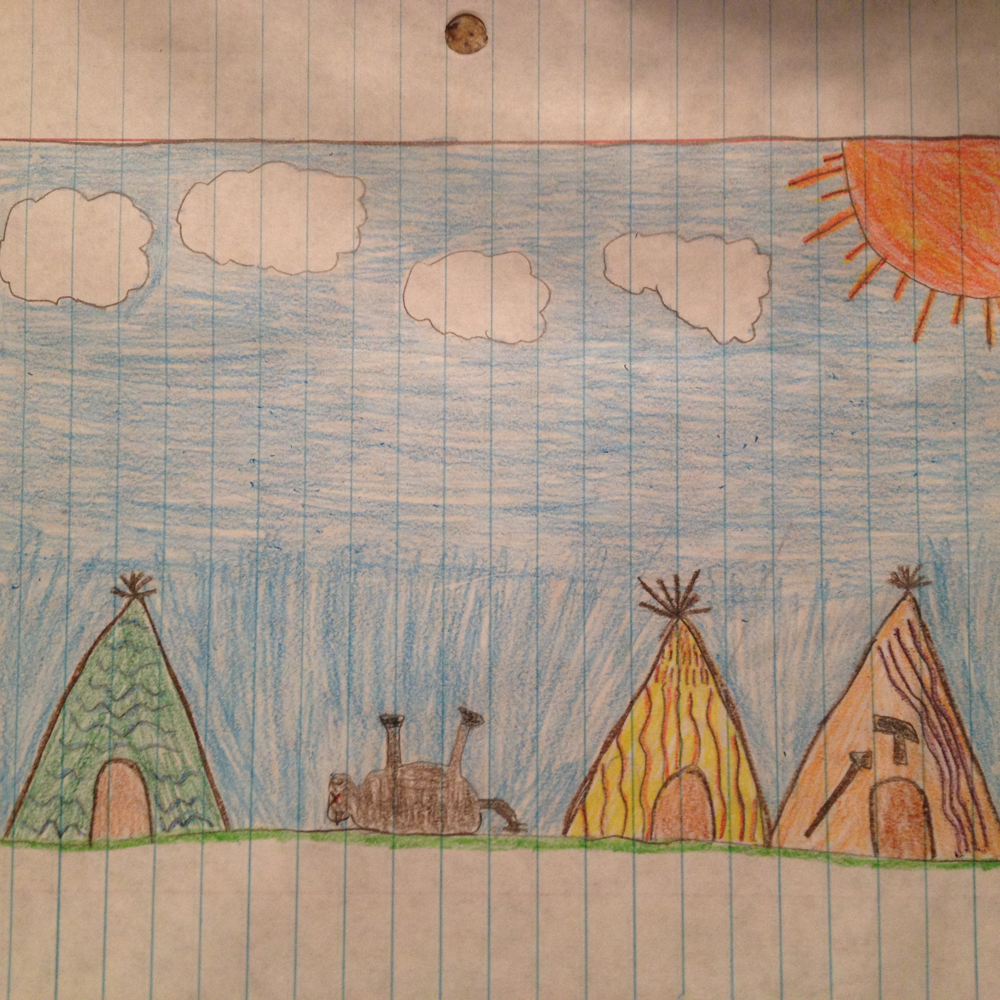

When we got back, our tribe was very suprised with the harvested meat we brought. They asked us how we hunted this buffalo. We said very easily, even though it took a few shots to kill him. then, the tribe started to celebrate with their special dance called the thankful dance, where we praise our hunted meat as we are thankful for this harvest.
Then, the tribe members started to cut up the buffalo as we walked by. We went into the middle of the tribe-grounds and got some art done onto our body, which showed how brave we were. We all showed our new emblems of bravery to the whole tribe, the tribe cheered us on.
After the merriment, we went to eat dinner and oh man was it delicious! It was one of the best dinners I've had, the buffalo tasted so juicy and yummy that I even asked for seconds!
